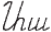
[а] - омега, последняя буква -> a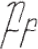
[б] - бурильный разводной ключ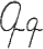
[г] - гонки - похож на g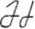
[ж] - Жан Алези на гонках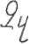
[з] - заезда старт на линии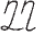
[д] - слон Дима (хобот и бивни)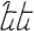
[е] - матросики екатириниского флота танцуют Яблочко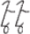
[э] - матросики танцуют Яблочко с повернутыми ступнями - Э-Э-Эх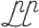
[ыэ] - как шва, рот раззявал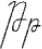
[тh] - пружина тххх - придыхательная т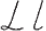
[л] - латинская Л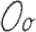
[о] латинская О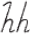
[h] - Х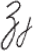
[й] йота, джей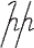
[и] - импотент, повисший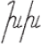
[х] - холодильника змеевеик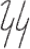
[к] - кактус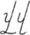
[в] - вешалка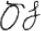
[тз] - тзинь - у гири сломали ручку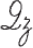
[дз] двойка, похожа на аз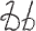
[тж] тяжело гирю поднимать с отломанной ручкой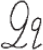
[дж]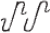
[м] молоко в сотейнике, ручка справа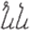
[н] налево ручка у сотейника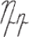
[гх-р] - опРокинули сотейник, картавая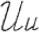
[с] сотейник без ручки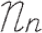
[о/во] опрокинутый сотейник без ручки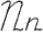
[рр] разломали и погнули сотейник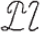
[ш] шипит змея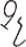
[ч] человеческие ухо (заглавная) / нос(строчная)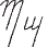
[п] а с хвостом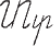
[т] транспортерная лента, s на боку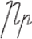
[рь] фонарь Р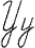
[ц] генацвали!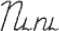
[у] Нидерланды успешны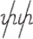
[пх] придыхательная п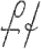
[кх] знак рубля, придыхательная к?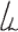
[ев]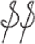
[ф] доллар фиатная валюта
омега - А
буровой разводной ключ
гонки ЖанАлези заезд
слон Дима, матрисики, матросики со слом. ступнями
раззявил пружина
L h j O
вешалка кактус